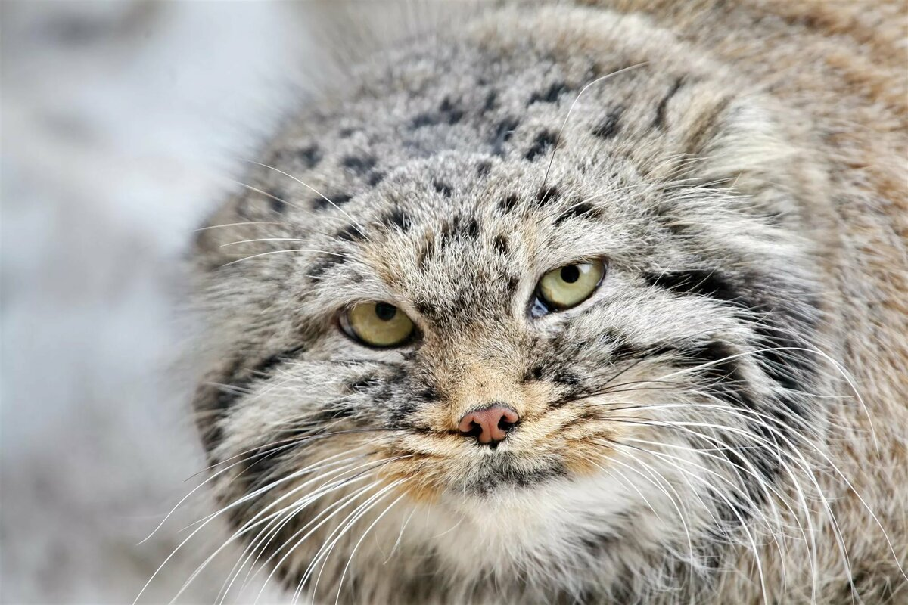

Ниже представленный несколько необычных пород кошек.
1. Мейн-кун
2. Сфинкс
3. Бенгальская кошка
4. Британская короткошерстная
Выполнение домашнего задания №1, вариант 1.
Нажми на картинку с котом

Выполнение домашнего задания №1, вариант 2.
Наведи курсор на кортинку с котом, а затем убери курсор с картинкиВыполнение домашнего задания №1, вариант 3.
Наведи курсор на кортинку с котом, и вы усышите, как он мяукает